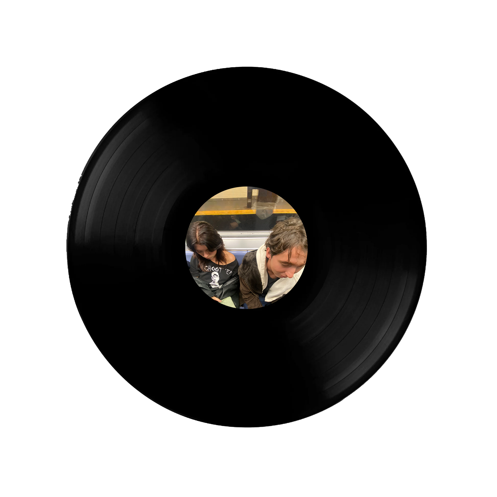
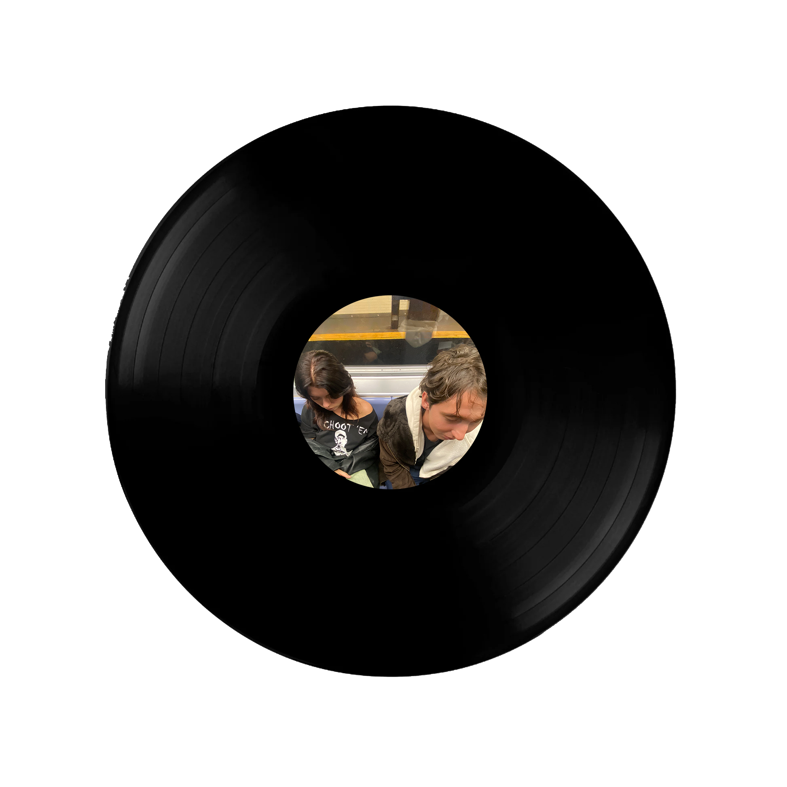

These are my friends Aeven and Daniel. I was friends with Aeven before I moved here and we moved at the same time. Into the same place with a few others. My other friend is Daniel. He lives around 4000 miles away so I don't get to see him much. It was cool two people I'm close with interacting for the first time.

 
